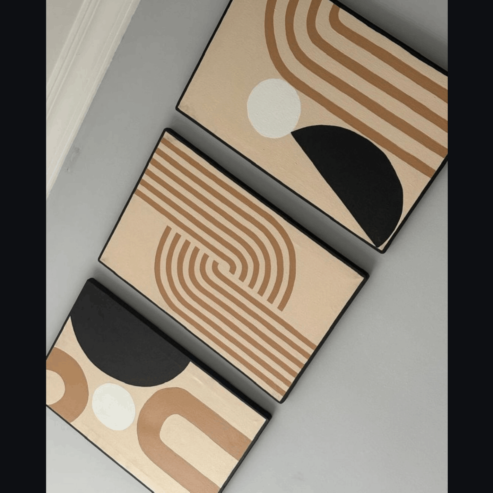
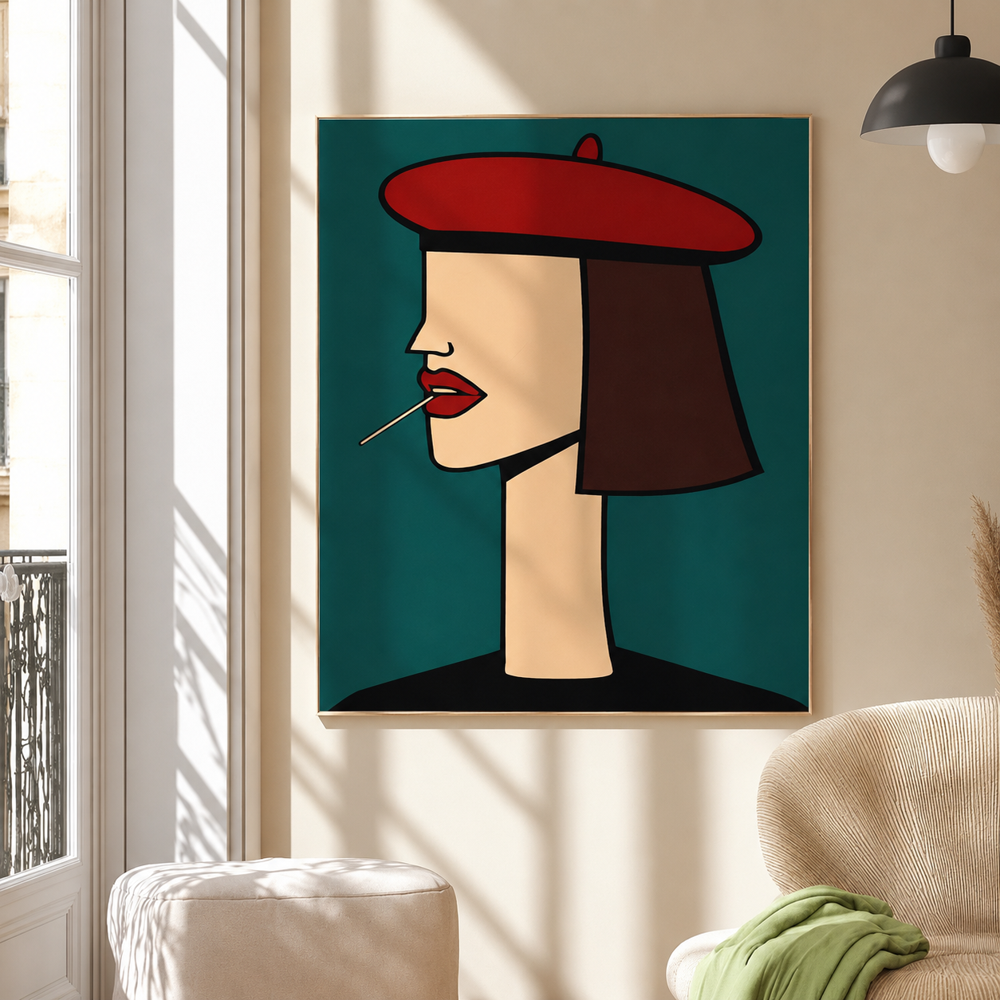

Qacha_Crafts is a creative handmade brand created by Eden Nigussie,
bringing together natural materials and artistic expression.
Using jute rope, canvas, and acrylic paints, Eden creates unique décor
pieces that combine handmade authenticity with modern aesthetics.
Each piece reflects a thoughtful approach to creativity, detail,
and meaningful design.


At Qacha_Crafts, simple materials are transformed into artistic and
meaningful décor pieces. From jute rope crafts and textured wall art
to canvas paintings, personalized home décor, gifts, and seasonal
decorations, each creation is designed to bring warmth, personality,
and an authentic handmade touch to a space.